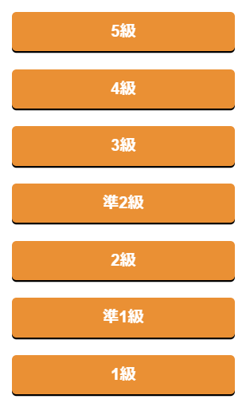
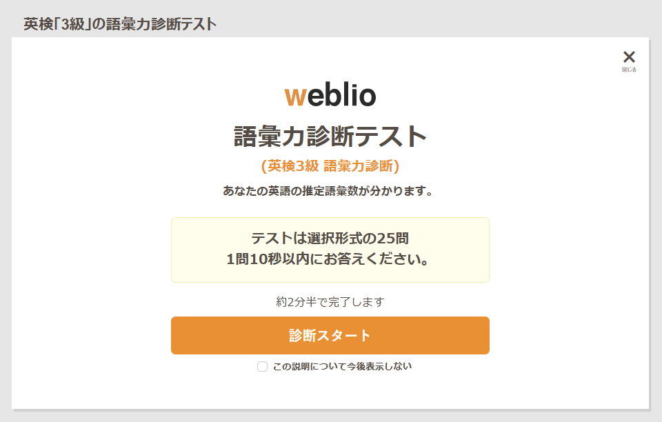
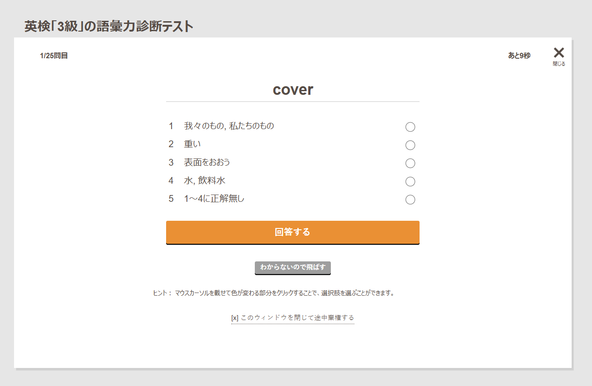
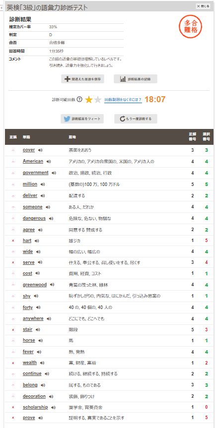

金価格が最高値を更新して南海で遅延が発生している今、
自分は受験生だが英語の過去問が90点満点中17点と壊滅的だったので、
適当に英単語の一問一答的なのを探していた。
そんなとき語彙力測定テストではあるものの英検の語彙力の測定テストなるものを見つけた。
大阪府の公立B問題の英語は長文がメインだからこういうのをしていても意味がない気もするが、やらないよりはマシだ。
早速やっていこう
早速やっていこうと思うが、ちょっとした注意点がある。それは回数制限だ。
▲ この通り回数制限がある。だが時間で復活するみたいだ。
無料で会員登録をすれば4回まで連続で受けれるみたいだ。
だが無制限にするにはWeblioプレミアムサービスというのに入らなければならない。
費用自体は安いが、その他の機能を使うわけじゃないならわざわざ金をかける理由はないだろう。

▲ 5級~1級の間で選択できるみたいだ。
この通り5級から1級の間で選べるみたいだ。
Geminiに聞いてみると大阪府の公立英語B問題は3~準2級程度みたいだ。
ということでまずは3級からやっていこう。

▲ まずはこんなのが出てくる。
このような画面が出てくる。診断スタートを押すと語彙力診断を開始できる。

▲ 問題画面はこの通り5択の中から選ぶことができる。
合計で25問ある。時間制限は1問あたり10秒だ。タイマーが進んでしまって画像は9秒になってしまっている。
そして見ての通り5択だ。1~4の中に選択肢がないと思うときは5番目を選択しよう。
わからなかったら飛ばすことだってできる。

▲ 25問すべてを解き終わると結果が表示される。
25問すべてを解き終われば結果を見ることができる。
結果では推定カバー率 判定 合否 回答時間と正誤を見ることができる。
自分はバカなので残念なことに3級ですら合格多難で合否はDと判定されてしまった。
だが間違えた数は25問中6問だ。そんな大量に間違えたわけではない。
だがちゃんと英単語を覚えなければならないのは事実だ。ガンバロウ。
まとめ
自分的にはこのサイトは英検を受ける人やただ英単語を覚えたい人にはお勧めできると思う。
だが、回数制限が会員登録や月額課金をしないとなくすことができない。それが残念である。
評価を○×で評価しよう。
〇:英単語を覚える・英検対策にはいいかもしれない。
×:会員登録・月額課金をしないと回数制限が発生する。